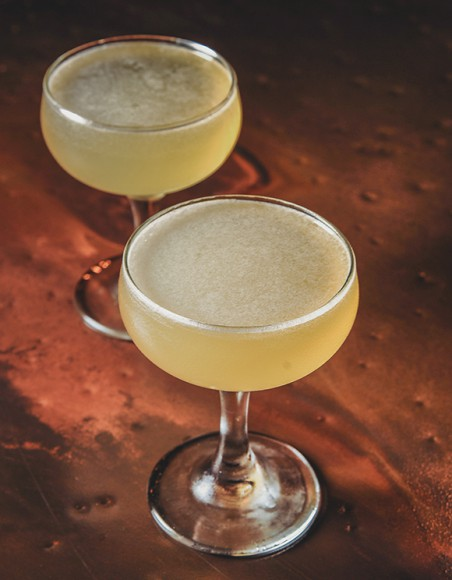

Back to Home
On the (Sham)Rocks

1 oz. Irish whiskey
1¼ oz. grappa
½ oz. fresh lemon juice
¼ oz. simple syrup (1:1)
Tools: shaker, strainer
Glass: coupe
Garnish: orange peel
In a shaker, add all ingredients with ice. Shake until chilled. Double strain into a coupe and garnish.
RECIPE BY: MAREA REYES / Lucky Rooster
2 ounces Irish whiskey
1/4 ounce absinthe
1/4 ounce Pierre Ferrand Dry Curaçao
1 barspoon Luxardo maraschino
1 dash Angostura bitters
Lemon twist for garnish
Olive for garnish
Add Irish whiskey, absinthe, dry curaçao, maraschino, and Angostura bitters to a mixing glass. Fill with ice and stir until well chilled, about 20 seconds. Strain into a chilled cocktail glass. Garnish with the lemon twist and olive, then serve.
RECIPE BY: NICK CARUANA
For the Agave Sour Mix:
2 ounces fresh juice from about 2 limes
1 ounce agave nectar
For the Cocktail:
1 1/2 ounces Jameson Irish whiskey
1/2 ounce single malt Scotch
1/4 ounce Pimm's
1 ounce agave sour mix
3 dashes Angostura bitters
Garnish: orange twist
For the Agave Sour Mix: Mix lime juice and agave nectar until dissolved.
For Each Cocktail: Add Irish whiskey and Scotch to a mixing glass filled with ice. Add Pimm's, agave sour mix, and Angostura. Shake until well chilled, about 15 seconds. Strain into a coupe glass, garnish with orange twist, and serve.
RECIPE BY: MAGGIE HOFFMAN
1 ounce Irish whiskey, such as Bushmills 10
1 ounce Averna
3/4 ounce freshly squeezed juice from 1 lemon
1/4 ounce demerara syrup (See Recipe)
Luxardo cherry, for garnish
For Demerara Syrup: combine 1 cup water with 1 cup demerara sugar in a small saucepan and heat over medium heat, stirring constantly, until sugar is dissolved. Cool before using. Simple syrup will keep in a sealed container in the refrigerator for up to 5 days.
For Cocktail: Combine whiskey, Averna, lemon juice, and syrup together in a shaker filled 2/3 with ice. Shake until thoroughly chilled, then strain into a chilled cocktail glass. Garnish with cherry and serve.
RECIPE BY: ELANA LEPKOWSKI
3 ounces Irish Whiskey
2 ounces Irish Cream
2 ounces Frangelico
2 cups Coffee, Strong and freshly brewed
For Garnish:
Whipped Cream
Nutmeg
Chopped nuts
Warm your coffee mugs by pouring some hot water into them and letting them sit for a minute before filling them with the cocktail.
Pour the liquor and liqueurs into the warmed coffee mug or Irish coffee glass.
Fill with the coffee and stir well.
Top with the whipped cream and dust with ground nutmeg & chopped nuts if desired.
RECIPE BY: CREATIVE CULINARY